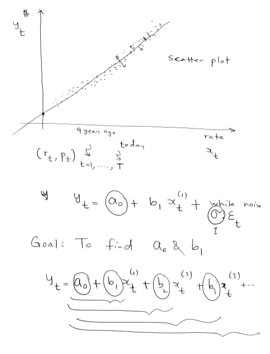
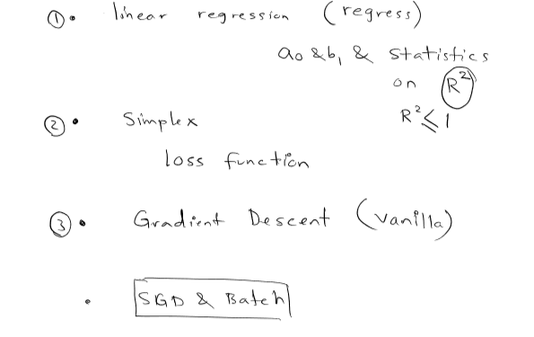
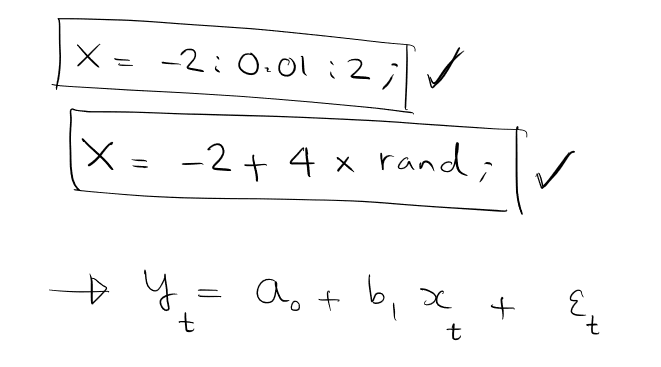
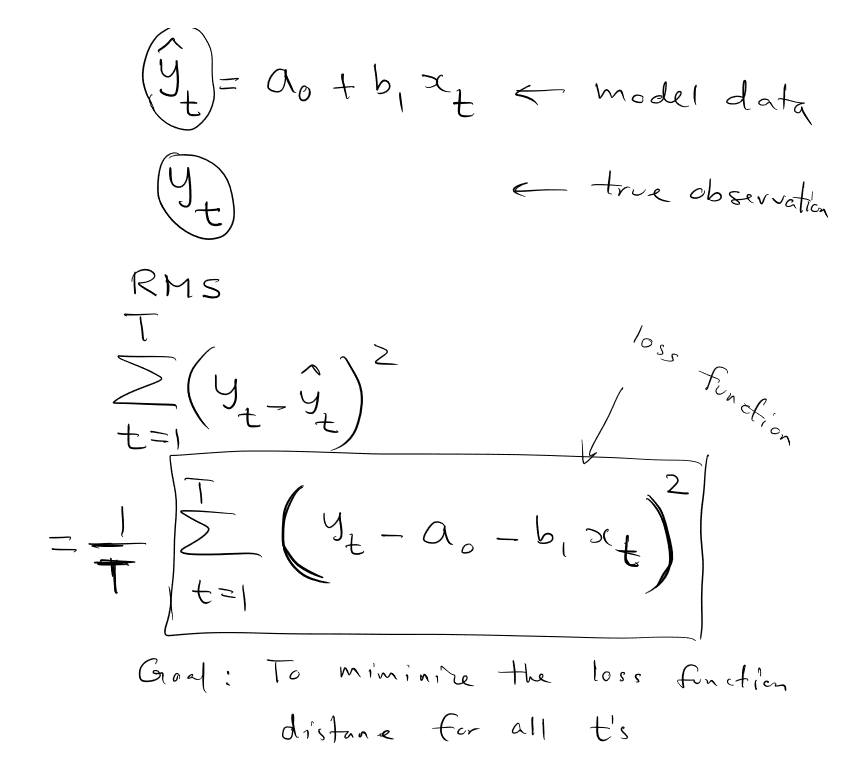
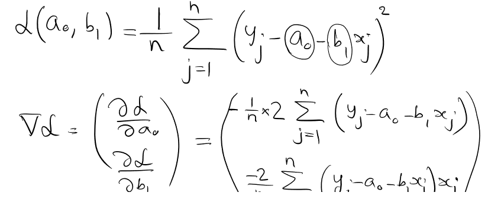
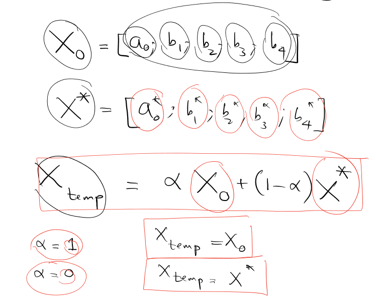
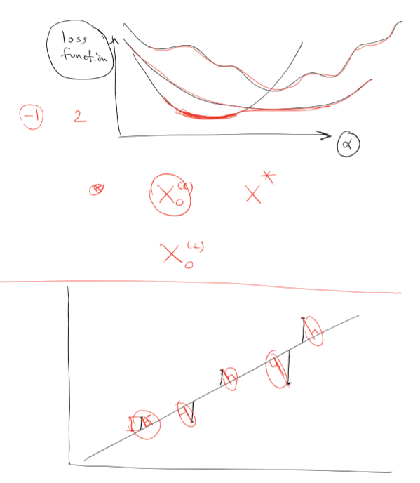
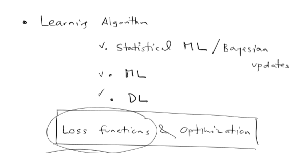
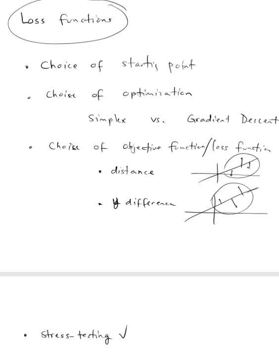

Lecture 5
Machine-learning (descents)
Here is an overall look at and illustration of machine-learning.
Given a set of datapoints in a scatterplot, we try to reverse-engineer the function by curve-fitting as best as possible to the datapoints. By assuming it is a polynomial function, all we need to do is figure out the values of a0, b1, ... essentially all the constants of this function that are specific to the datapoints.
We have a couple of strategies: 
- Linear regression
- Simplex algorithm
- Gradient descent (vanilla, SGD, and batch)
The first curve-fitting strategy is simply linear regression: finding the best-fit line through all the datapoints you have. The coefficient of determination, R2, is the proportion of the variance in the dependent variable, which essentially allows you to figure out how much the data "varies." Linear regression is covered in all basic statistics courses.
The second strategy is the Simplex algorithm. We will not be going over this, but you should check it out online yourself. It is a pretty popular statistical method.
The types of gradient descents are separated, essentially, by how we filter in the samples. Vanilla gradient descent takes in the entire population. Stochastic gradient descent, on the other hand, takes in randomly-picked samples.
The first x-range is from -2 to 2 with intervals of 0.01. The second is random.
After applying the stochastic gradient descent to find a curve, we use the RMS (root mean squared) method to check the error/how close the datapoints are to the curve.
Listed below are the objective function and the gradient of the objective function.
We can also write this another way, with x and x*
. Here are two quick sketches/illustrations of the above.
To sum it up, the learning algorithm is applicable to statistical ML (Bayesian updates), machine-learning as a whole, and deep-learning, which you can individually explore. For these, the loss functions are an important part of optimization.
As for the loss function itself, there are a couple key factors that affect which type of loss function to use.
These are: 1) the choice of the starting point 2) the choice of optimization (using simplex, or using some sort of gradient descent) 3) the choice of objective function (whether it is the distance or the y-difference (careful!) 4) for all of these, we need to stress-test them with the datapoints to see how accurate they are.
Take a look at Professor Hirsa's notes in a pdf: Lecture 5 Notes